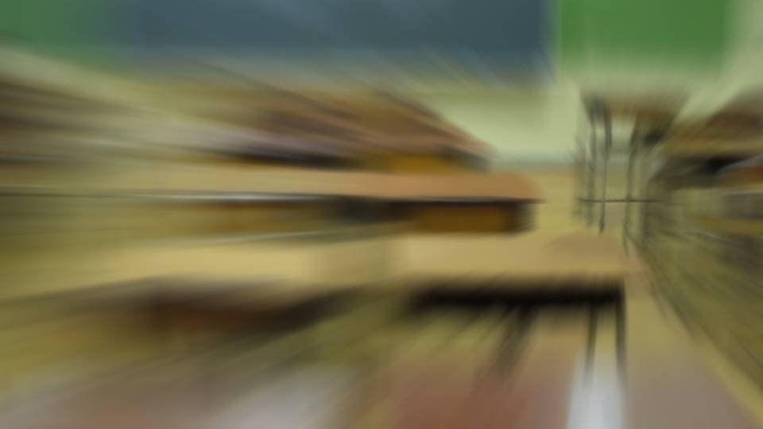
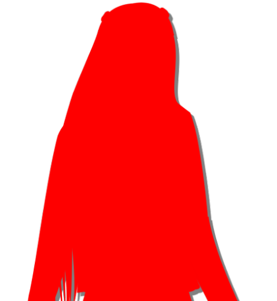
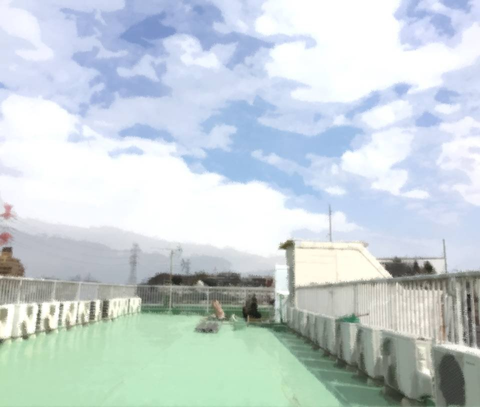

Welcome to Motoki-cho!

"Okay, I'm off!"

"Be careful."

"Yaaawn... have a good day."
Seen off by a bright-eyed Mom and a still-sleepy Dad, I left home.
Seen off by a bright-eyed Mom and a still-sleepy Dad, I left home.

Early as it was, I pressed the intercom next door without a second thought.
Into the clear sky over quiet Motoki-cho, the faint sound of the intercom rang out.
Into the clear sky over quiet Motoki-cho, the faint sound of the intercom rang out.

"Oh my, Natsumi-chan! Morning, morning!"
"Morning! Oh, your bandage is off!"
"That's right! I put so much into it that time that I stabbed too deep!"
"Morning! Oh, your bandage is off!"
"That's right! I put so much into it that time that I stabbed too deep!"
At the moment, everyone had a cut on their arm.
Erika-chan had put a medicinal herb for cuts on them, and it worked better than we'd imagined. Our injuries were healing steadily.
It's only a matter of time before our injuries are completely healed.
Erika-chan had put a medicinal herb for cuts on them, and it worked better than we'd imagined. Our injuries were healing steadily.
It's only a matter of time before our injuries are completely healed.

"Aaah, I'm sleepy..."
"Morning. Did you stay up late?"
"No, it's, you know, entrance-exam studying..."
"Haruka's got entrance exams this year! I'm going to drill her hard!"
"Man, I never figured Mom for such a pushy education mom..."
"Morning. Did you stay up late?"
"No, it's, you know, entrance-exam studying..."
"Haruka's got entrance exams this year! I'm going to drill her hard!"
"Man, I never figured Mom for such a pushy education mom..."
"I can't raise her in a way that would disappoint Eiichiro-san!"
"That's cheating, saying that..."
Just then, the door to my apartment opened.
"That's cheating, saying that..."
Just then, the door to my apartment opened.

"Mifuyu, that's enough, it's only 6:30. Shouting like that is so middle-aged..."
"Oh my, Akane, morning, morning to you too!"
A second shrill greeting from Obasan.
She seemed to have gotten even livelier since coming back from Arata.
I leaned in close to Haruka's ear.
"Oh my, Akane, morning, morning to you too!"
A second shrill greeting from Obasan.
She seemed to have gotten even livelier since coming back from Arata.
I leaned in close to Haruka's ear.
"You don't think Obasan used Droga or something?"

"No, this is more like divine-messenger energy, isn't it?"

"Oh, Akane, to stay young forever you have to be lively from the heart!"
"No, that's not what I..."
"No, that's not what I..."
"Natsumi, let's get out while we can..."
"Yup..."
Slipping out from between a friendship of more than 40 years, Haruka and I left the apartment building.
"Yup..."
Slipping out from between a friendship of more than 40 years, Haruka and I left the apartment building.


"Mmm, the air's so good! Arata's nice too, but Motoki-cho's the best!"
"Haruka, you've said that every day since we got back..."
"The town you were born and raised in is dearer than anything! Right?"
"Of course!"
"Haruka, you've said that every day since we got back..."
"The town you were born and raised in is dearer than anything! Right?"
"Of course!"

For us, with no club activities, leaving home at 6:30 was way too early.
But today, there was something important we had to do.
We rode our bikes down the row of cherry trees, showered from head to toe in a storm of cherry petals.
It was already warm today, warm enough for short sleeves.
The weather forecast said it would go over 25 degrees, despite the time of year.
But today, there was something important we had to do.
We rode our bikes down the row of cherry trees, showered from head to toe in a storm of cherry petals.
It was already warm today, warm enough for short sleeves.
The weather forecast said it would go over 25 degrees, despite the time of year.
I really do love cherry blossoms.
There are all kinds of memories, but still, I love this flower.
There are all kinds of memories, but still, I love this flower.
To me, the cherry blossom is a special flower.
Through these cherry blossoms, I've learned about the happy things, the painful things, and the hard things too.
Through these cherry blossoms, I've learned about the happy things, the painful things, and the hard things too.
Still, I can't even imagine now that this Motoki-cho almost sank into a forest of cherry trees.
But now, I can't hear the voice of the cherry trees anymore.
That proves what happened in Arata.
But now, I can't hear the voice of the cherry trees anymore.
That proves what happened in Arata.
"Hey, Natsumi! Want to come to Arata this summer vacation!?"
"To Arata?"
"Yeah, we had a rough time of it last time, but normally it's a nice, peaceful place. Next time no memorial service or anything, just sightseeing."
"Ha! Sounds great! I want to see Chiga-nee and Kana-chan too, and talk more with Erika-chan!"
"To Arata?"
"Yeah, we had a rough time of it last time, but normally it's a nice, peaceful place. Next time no memorial service or anything, just sightseeing."
"Ha! Sounds great! I want to see Chiga-nee and Kana-chan too, and talk more with Erika-chan!"
"'Erika-chan,' she says...
Grandma's tastes really are young..."
"I hope she stays healthy forever..."
"Oh, that reminds me, Grandma had a checkup the other day, just in case, and the blood vessels in her heart were apparently in a bad way. But they caught it before any attack, so she should be fine."
"I hope she stays healthy forever..."
"Oh, that reminds me, Grandma had a checkup the other day, just in case, and the blood vessels in her heart were apparently in a bad way. But they caught it before any attack, so she should be fine."
"I hope she takes good care of herself...
Maybe the stress from the curse-killings got to her after all.
But she only got the checkup because of that incident, right?
In a way, maybe Shigatsu Youka saved her?"
"Hahaha, well, it's all in how you look at it! Anyway, let's ask Goto about summer vacation too. She's got no friends anyway, so she's bound to be free."
"Hahaha, well, it's all in how you look at it! Anyway, let's ask Goto about summer vacation too. She's got no friends anyway, so she's bound to be free."
Before long, the cherry trees of Central Park came into view.
But the park looked a little different from the one we were used to.
But the park looked a little different from the one we were used to.


"Goto here yet?"
"Oh, look, Haruka. Goto's already here, isn't she?"
A familiar bike was parked at the park entrance.
This mini-size bike for riding to school was definitely Goto's.
I looked further in.
"Oh, look, Haruka. Goto's already here, isn't she?"
A familiar bike was parked at the park entrance.
This mini-size bike for riding to school was definitely Goto's.
I looked further in.

Goto was standing there.
And one more person, a girl in a Motoki High School uniform.
But she soon stepped away from Goto and left by a different exit.
And one more person, a girl in a Motoki High School uniform.
But she soon stepped away from Goto and left by a different exit.

"Oh, Senpai! Good morning!"
"Morning, Goto. Who was that just now?"
"Morning, Goto. Who was that just now?"

"No idea... While I was standing here she asked me, 'Did the cherry tree here disappear?'
She left without giving her name, but she's not in my year."
"Hmm."
"I feel like I've seen her somewhere, though..."
"I feel like I've seen her somewhere, though..."

"Well, never mind that, let's get started."
"Okay."
"Okay."
Goto had been standing where that goshinboku used to be.
But because of what happened, the goshinboku had apparently withered all of a sudden and crumbled to pieces.
By now the tree had been completely removed, and there was no trace of it to be seen.
But because of what happened, the goshinboku had apparently withered all of a sudden and crumbled to pieces.
By now the tree had been completely removed, and there was no trace of it to be seen.
It had caused a huge stir as an unexplained phenomenon, but that would probably die down before long.
Because of that stir, we had decided to gather today, this early in the morning, when there would be as few people around as possible.
Because of that stir, we had decided to gather today, this early in the morning, when there would be as few people around as possible.
I took a handkerchief out of my bag.
Then the three of us crouched down on the spot and gazed at what I had wrapped in the handkerchief.

Out of the handkerchief came the broken hairpin.
Itohime's remains had been lying right beside it.
Itohime's last wish―that we bury the hairpin at the goshinboku where Nii-sama sleeps.
Itohime's remains had been lying right beside it.
Itohime's last wish―that we bury the hairpin at the goshinboku where Nii-sama sleeps.
I picked up a stick lying nearby and dug a small hole.
I gently laid the hairpin in the hole and covered it with earth.
Bathed in the rising morning sun, the three of us put our hands together.
I gently laid the hairpin in the hole and covered it with earth.
Bathed in the rising morning sun, the three of us put our hands together.
Please, be happy over there with Nii-sama.
And if you feel like it, please come to Motoki-cho.
Itohime suffered for 800 years. To make up for it, may the rest of her time be happy.
And if you feel like it, please come to Motoki-cho.
Itohime suffered for 800 years. To make up for it, may the rest of her time be happy.
"Hey, Goto, there's something I still don't understand.
Why were Ojisan, Sakura-san, Chiga-nee and I needed back then?"
She had said that the living one and the dead one of the first generation, and the living one and the dead one of the second generation, were needed as divine messengers.
What on earth were we going to be used for?
She had said that the living one and the dead one of the first generation, and the living one and the dead one of the second generation, were needed as divine messengers.
What on earth were we going to be used for?

"I don't know the exact mechanism, but for Shigatsu Youka to live forever, it probably needed spores produced inside those four bodies.
To build resistance to third-generation blood, a weakness far too deadly to call a weakness."

"She did say she'd stretch her arms from Arata to Motoki-cho, right?"
"Once its arms reached Motoki-cho, all that was left was to suck up the land's nourishment and grow huge. But that alone wouldn't let it live forever. By absorbing the divine messengers, its final goal― I think agelessness and deathlessness would at last be achieved."
"This is all way too epic, I can't follow it...
"Once its arms reached Motoki-cho, all that was left was to suck up the land's nourishment and grow huge. But that alone wouldn't let it live forever. By absorbing the divine messengers, its final goal― I think agelessness and deathlessness would at last be achieved."
"This is all way too epic, I can't follow it...
Well, none of that matters anymore."
"Yeah..."
"Yeah..."

"Well, it's only 6:50. What now? Head to school already?"
"School's not even open yet..."
"Right! Then let's... go to Zahha, it's open 24 hours!"
"School's not even open yet..."
"Right! Then let's... go to Zahha, it's open 24 hours!"

"Rejected!
We went through hell yesterday!"
"Five rounds of Russian-roulette takoyaki was a bit much, even for me..."
"Come on, you're no fun..."
"You, how many rounds of Russian-roulette takoyaki do you need before you're satisfied! You gambler!"
"Senpai during Russian-roulette takoyaki is way scarier than Shigatsu Youka."
"Agreed."
"Hmph! Fine, no Russian-roulette takoyaki, so Zahha, okay?"
"You, how many rounds of Russian-roulette takoyaki do you need before you're satisfied! You gambler!"
"Senpai during Russian-roulette takoyaki is way scarier than Shigatsu Youka."
"Agreed."
"Hmph! Fine, no Russian-roulette takoyaki, so Zahha, okay?"
"Then I'm all for it!
Hey, hey, Niimura-senpai! What are you treating me to today?"
"Are you stupid, you hyena! One ice cream, tops!"
"Oooh! I only said it as a joke, and she's really treating me...!"
"Haruka, you're pretty soft on Goto, aren't you..."
"Are you stupid, you hyena! One ice cream, tops!"
"Oooh! I only said it as a joke, and she's really treating me...!"
"Haruka, you're pretty soft on Goto, aren't you..."

"Stand!
Bow!"
"Good morniiing!"
"Yes, good morning."
Right, so our homeroom teacher is Mukai-sensei.
Only now is it really sinking in that I'm a second-year.
"Good morniiing!"
"Yes, good morning."
Right, so our homeroom teacher is Mukai-sensei.
Only now is it really sinking in that I'm a second-year.
Even so, it really was hot today...
Partly because we'd stayed at Zahha till the last minute and rushed to school, though.
When I rolled up my sleeve a little, my bandaged left arm appeared.
It was the cut I had made myself, back then.
Partly because we'd stayed at Zahha till the last minute and rushed to school, though.
When I rolled up my sleeve a little, my bandaged left arm appeared.
It was the cut I had made myself, back then.
"Oh, Kogori-san, back from today, I see.
How was the memorial service?"
"Huh? Yes, well, it was hard in a lot of ways."
Hard doesn't even begin to cover it...
"Huh? Yes, well, it was hard in a lot of ways."
Hard doesn't even begin to cover it...
When I looked around, the classmates were all the same, and the homeroom teacher was Mukai-sensei.
It's probably going to be a laid-back year.
My seat's at the very back, and the seat next to me is empty, so I should be able to take it easy.
Ah, but there'll be a seat change sooner or later...
This seat at the very back is pretty precious...
It's probably going to be a laid-back year.
My seat's at the very back, and the seat next to me is empty, so I should be able to take it easy.
Ah, but there'll be a seat change sooner or later...
This seat at the very back is pretty precious...
"Also, it's sudden, but today I'll introduce a transfer student."
At those words from Mukai-sensei, the classroom started buzzing.
A transfer student, at this time of year?
A week earlier, and the transfer student could have fit in naturally.
At those words from Mukai-sensei, the classroom started buzzing.
A transfer student, at this time of year?
A week earlier, and the transfer student could have fit in naturally.
The classroom door opened, and the transfer student came in.
"Ooh...!"
"Whoa...!"
At the sight of the transfer student, the class stirred even more.
Long, silky hair, slender legs, beautiful features― the word 'sparkle' practically floated in the air around her.
And what struck me most of all was― her face.
"Whoa...!"
At the sight of the transfer student, the class stirred even more.
Long, silky hair, slender legs, beautiful features― the word 'sparkle' practically floated in the air around her.
And what struck me most of all was― her face.
"Itohime...?"
That face was familiar.
Her features were the spitting image of Itohime's.
And she was the girl who'd been talking with Goto this morning!
Stopping by the place where that goshinboku had been, this morning...
Don't tell me she was really reborn―
That face was familiar.
Her features were the spitting image of Itohime's.
And she was the girl who'd been talking with Goto this morning!
Stopping by the place where that goshinboku had been, this morning...
Don't tell me she was really reborn―
"(Osakan dialect) How do you do, y'all. I'm Iori Goshirakawa.
Um...
Born and raised in Osaka, but on account of one thing and another, I've moved out this way.
Oh, and about my transfer bein' late...
............"
Then Goshirakawa-san stopped short.
For a moment, tension ran through the classroom.
Then Goshirakawa-san stopped short.
For a moment, tension ran through the classroom.
"My transfer was late 'cause I bunny-hopped the whole 500 kilometers from Osaka!
Lordy, that plumb wore me out...
Hop, hop!"
"............"
"............"
"............"
"............"
"............"
"............"
"............"
Huh? What is this...
What's she trying to say with that?
Tension running through the classroom― the air had frozen solid.
But her tone, so obviously going for a gag... From Osaka.
Don't tell me...!
What's she trying to say with that?
Tension running through the classroom― the air had frozen solid.
But her tone, so obviously going for a gag... From Osaka.
Don't tell me...!
"Uh... well, now...?"
The transfer student, seeing everyone's reaction, began to break out in a cold sweat.
Just as I thought, this is...!
The transfer student, seeing everyone's reaction, began to break out in a cold sweat.
Just as I thought, this is...!
Unable to stand that impossible hunch, or this frozen air, any longer, I stood up.
And then―!
And then―!

"Oh, come ON!"
Swallowing my shame, I shouted at the top of my lungs.
The whole class snapped around to look at me.
Mukai-sensei looked at me too.
Everyone looked at me with eyes that said, "What is this girl going on about?"
Ah... no good after all?
The whole class snapped around to look at me.
Mukai-sensei looked at me too.
Everyone looked at me with eyes that said, "What is this girl going on about?"
Ah... no good after all?
Then Goshirakawa-san's face lit right up.
"Ooh! See there, Osaka humor gets through anywhere after all!
Sensei, that seat next to her, it's free, ain't it!?"
"Huh? Ah, yes, go ahead... Um, the question time and so on―"
Before the teacher could finish, Goshirakawa-san came running over to me.
"Huh? Ah, yes, go ahead... Um, the question time and so on―"
Before the teacher could finish, Goshirakawa-san came running over to me.
"Mighty pleased to meet you! Iori Goshirakawa!
Well, thank goodness! A tad late, but you sure put some holler into it, nice comeback!"
Goshirakawa-san looked at me with sparkling eyes.
So she really was waiting for a comeback...
"Oh... I'm Natsumi Kogori. Um... nice to meet you."
Goshirakawa-san looked at me with sparkling eyes.
So she really was waiting for a comeback...
"Oh... I'm Natsumi Kogori. Um... nice to meet you."
"Ko-go-ri...?
Aha! Now that's an unusual family name if I ever heard one!
Course, mine's unusual too! Anyhow, you be good to me now, hear?"

Goshirakawa-san held out her left hand to me.
A beat behind, I held out my hand too, and we shook hands.
Taking my hand, Goshirakawa-san squeezed it tight.
A beat behind, I held out my hand too, and we shook hands.
Taking my hand, Goshirakawa-san squeezed it tight.
"Ah, ow...!"
"Huh!? S-sorry! Was I squeezin' too hard!?"
"No, it's just that I've got a little injury..."
It had jarred the cut I'd made on my arm with the knife.
Then Goshirakawa-san gently stroked my bandaged left arm.
"Huh!? S-sorry! Was I squeezin' too hard!?"
"No, it's just that I've got a little injury..."
It had jarred the cut I'd made on my arm with the knife.
Then Goshirakawa-san gently stroked my bandaged left arm.
"Looks like this hand's been through somethin' awful.
It's all right, now. It'll heal up real soon."
"O-okay..."
The tender look and voice she suddenly showed.
That, too, was so very like Itohime.
"O-okay..."
The tender look and voice she suddenly showed.
That, too, was so very like Itohime.
Everyone was watching our exchange with puzzled looks.
W-well, everyone in Motoki-cho is nice, so even someone like Goshirakawa-san will surely fit in.
Probably... Surely... Most likely... Nine times out of ten... Maybe.
W-well, everyone in Motoki-cho is nice, so even someone like Goshirakawa-san will surely fit in.
Probably... Surely... Most likely... Nine times out of ten... Maybe.
"Kogori-san, thank you kindly.
I reckoned I'd gone and blown it with that bit, but you read the room for me.
Kogori-san, you're real good people."
Goshirakawa-san gave me a smile.
When I saw that smile, I felt my heart drawn right in.
A comfortable gaze that somehow made me feel so warm, and happy too.
Goshirakawa-san gave me a smile.
When I saw that smile, I felt my heart drawn right in.
A comfortable gaze that somehow made me feel so warm, and happy too.
"Hey, are you by any chance..."
"Hmm?"
"Kogori-san, Goshirakawa-san, it's fine to get excited on first meeting, but please settle down now."
"Ah, sorry 'bout that, Sensei! Well then, see you later on, hear?"
"Hmm?"
"Kogori-san, Goshirakawa-san, it's fine to get excited on first meeting, but please settle down now."
"Ah, sorry 'bout that, Sensei! Well then, see you later on, hear?"
Goshirakawa-san took her seat as if nothing had happened.
"Right, I'll take attendance."
Even as Mukai-sensei said it, not only the boys but the girls too kept looking at Goshirakawa-san, their eyes glued.
Well, with someone this beautiful it couldn't be helped, but I was staring at her for a different reason.
Even as Mukai-sensei said it, not only the boys but the girls too kept looking at Goshirakawa-san, their eyes glued.
Well, with someone this beautiful it couldn't be helped, but I was staring at her for a different reason.
Iori Goshirakawa.
Is this girl really Itohime's reincarnation?
If she is...
Is this girl really Itohime's reincarnation?
If she is...
If she is, then I have to welcome this girl with everything I've got.
No, even if she isn't a reincarnation, I have to show her what a good place Motoki-cho is.
No, even if she isn't a reincarnation, I have to show her what a good place Motoki-cho is.
It looks like this girl and I are going to know each other for a long time.

"Well, how 'bout that, y'all can get up on the roof at this school! That's a rare one!"
A warm breeze flowing across the roof.
A warm breeze flowing across the roof.
"Um, reckon I can call you Natsumi-chan?"
"Just Natsumi's fine."
"All right then, Natsumi. Back at morning homeroom, what were you fixin' to ask me?"
"Huh? Um, well..."
"Just Natsumi's fine."
"All right then, Natsumi. Back at morning homeroom, what were you fixin' to ask me?"
"Huh? Um, well..."
Now that I've calmed down, something like "Are you the reincarnation of Itohime?" is really hard to say.
But Goshirakawa-san really does look a lot like Itohime.
But Goshirakawa-san really does look a lot like Itohime.
"Say, don't tell me I look like somebody?"
"Huh!?"
"Ooh, now that's a big reaction! Hit the nail right on the head, didn't I?"
"Well... Yeah, I guess so... Only, she's already passed away..."
"Hmm, is that right..."
Then Goshirakawa-san turned her eyes to the sky.
"Huh!?"
"Ooh, now that's a big reaction! Hit the nail right on the head, didn't I?"
"Well... Yeah, I guess so... Only, she's already passed away..."
"Hmm, is that right..."
Then Goshirakawa-san turned her eyes to the sky.
"I'm the type that puts a good bit of stock in fortune-tellin' and such.
Could be I came here 'cause you were thinkin' about her, Natsumi."
"Goshirakawa-san..."
"Iori's fine, I'm tellin' you!"
"Goshirakawa-san..."
"Iori's fine, I'm tellin' you!"
"Okay. Iori, then.
Iori, doesn't it bother you to be seen that way?
Just because you look like someone..."
"Hmm, can't say it bothers me none. If anything, I'd sure like to know more about her. What was she like?"
"We didn't meet all that much, but she really longed for Motoki-cho. We promised to go to Motoki-cho together, but in the end it never came true... She said that if she were ever reborn, she'd want to come to Motoki-cho."
"Hmm, can't say it bothers me none. If anything, I'd sure like to know more about her. What was she like?"
"We didn't meet all that much, but she really longed for Motoki-cho. We promised to go to Motoki-cho together, but in the end it never came true... She said that if she were ever reborn, she'd want to come to Motoki-cho."
"Well, I'll be! Then maybe I really am her reincarnation!
Ahahaha!"
Iori laughed brightly, without seeming to mind at all.
But right away, she looked down at the schoolyard, eyes lowered.
Iori laughed brightly, without seeming to mind at all.
But right away, she looked down at the schoolyard, eyes lowered.
"Then I sure do owe her one.
Otherwise you wouldn't have given my gag a comeback, Natsumi, and I'd have just gone on bein' the odd one out in class."
"............"
"............"
"Aha! Sorry, sorry, I'm talkin' your ear off!"
"No, it's just...
It only just happened, so I'm still a little confused..."
"Yeah, I reckon..."
Her eyes already downcast, Iori lowered them even further, her face turning serious.
Then, as if using that for momentum, she looked straight up.
"Yeah, I reckon..."
Her eyes already downcast, Iori lowered them even further, her face turning serious.
Then, as if using that for momentum, she looked straight up.
"Well then, I'll be her reincarnation. Suits me just fine."
"But that really wouldn't be right..."
"Truth is... I have no memory."
"Huh?"
"No foolin', I truly don't remember a thing from before April 8 last week. I don't know why I came to Motoki-cho or how I'd been gettin' along..."
"But that really wouldn't be right..."
"Truth is... I have no memory."
"Huh?"
"No foolin', I truly don't remember a thing from before April 8 last week. I don't know why I came to Motoki-cho or how I'd been gettin' along..."
"I just remember my name, is all.
The police and other folks are lookin' into who I am and where and how I lived.
Right now I'm stayin' at a care facility here in Motoki-cho, though...
Mopin' around forever just ain't me, so I pestered 'em till they let me into high school.
So...
so it's all right by me if I'm her stand-in.
Right now, I'm nobody anyhow."
"............"
"............"
"Ahaha! Shoot, that got kinda dark, didn't it!"
"N-no, thank you for telling me."
"N-no, thank you for telling me."
―Iori Goshirakawa-san of class 2-2, please come to the staff room at once.
"Oh, they're callin' me in! A transfer student's busy as all get-out.
Bye now!"
Iori took off running and left the roof just like that.
"............"
I took a breath and looked up at the sky.
I took a breath and looked up at the sky.
The girl with no memory, Iori Goshirakawa.
She may or may not be Itohime's reincarnation. There's no way to know for sure.
But there's one thing I can say.
She may or may not be Itohime's reincarnation. There's no way to know for sure.
But there's one thing I can say.
Iori says she's fine being Itohime's reincarnation. If so―
I want Iori to come to love this place.
If she has no memories, I want her to fill up on wonderful ones.
If she has no memories, I want her to fill up on wonderful ones.
Itohime said it:
'I can make the people around me happy.'
So I'll believe that.
Believing that, I'll live here with Iori and everyone.
'I can make the people around me happy.'
So I'll believe that.
Believing that, I'll live here with Iori and everyone.
For now, simply looking ahead.
Itohime is the past, and I won't let my thoughts race only there.
Iori is the future, and I let my dreams race toward it.
Itohime is the past, and I won't let my thoughts race only there.
Iori is the future, and I let my dreams race toward it.
Read ✓